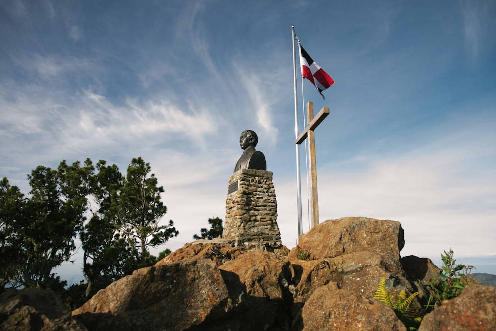

Pico Duarte (The Summit)
Challenge yourself with the Caribbean's highest peak.

From the highest peak in the Caribbean to hidden coastal paths, Dominican Trails is your guide to adventure.
Find Your Next HikeChallenge yourself with the Caribbean's highest peak.
An exhilarating adventure of jumping and sliding through waterfalls.
A beautiful trek through dense tropical forests to a stunning cascade.